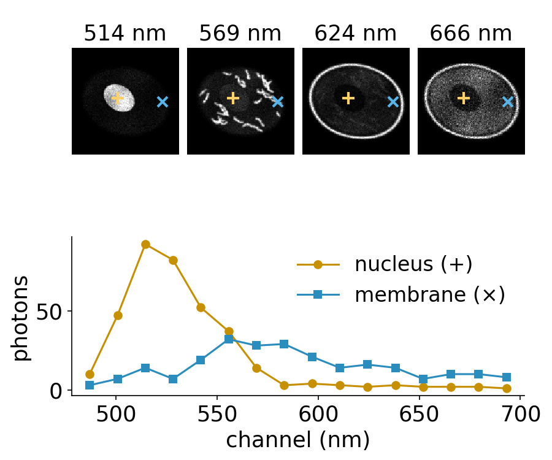
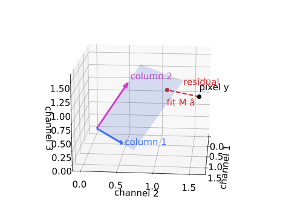
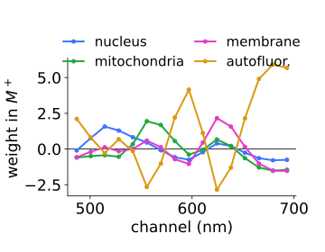
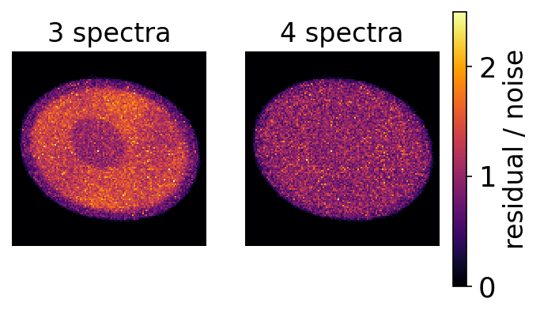
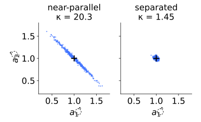
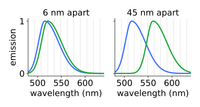
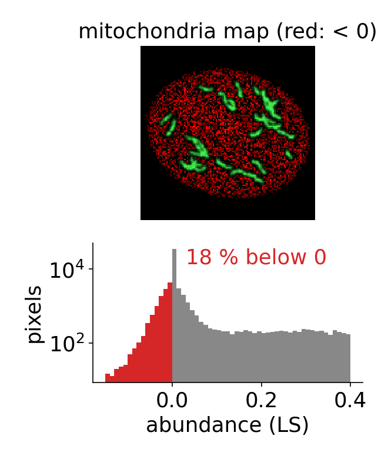

Last unit: two dyes, two channels, compensation with M^{-1}. A spectral detector records 8–32 channels per pixel, a lambda stack: more equations than unknowns, and with noise they never all hold.
Take the mixture closest to the measured spectrum: least squares, a projection.
One pseudo-inverse for the whole image.
The residual shows where the model is wrong (a missing component).
Conditioning: how much similar spectra amplify noise.
Photon noise and weighted least squares.
Slides titled The math give the formulas and proofs; the ideas are complete without them.
A spectral microscope records one image per wavelength band (here 16 bands of about 14 nm between 480 and 700 nm). Each pixel is a short measured spectrum.
The cell has four components: nucleus, mitochondria, membrane, and a diffuse autofluorescence with a broad spectrum.
Job: explain each pixel’s spectrum as a sum of the four reference spectra, \mathbf y \approx M\mathbf a, with M now 16 × 4.
The same problem everywhere: multiplexed immunofluorescence, hyperspectral remote sensing (a field pixel = soil + crop + water), Raman and hyperspectral histology.

More equations than unknowns: take the closest mixture
Three channels, two dyes. All the pixels the model can explain, M\mathbf a for any \mathbf a, form a plane through the origin, spanned by the two columns.
A noisy pixel lies a little off the plane: no \mathbf a fits exactly.
Least squares picks the point of the plane closest to the pixel: drop a perpendicular.
The perpendicular part is the residual: what the model cannot explain.
With as many channels as dyes the plane is the whole space and least squares is M^{-1}: last unit was a special case.

A 3 \times 2 example by hand
M = \begin{pmatrix} 1 & 0.2 \\ 0.5 & 0.5 \\ 0.1 & 1 \end{pmatrix}, a pixel \mathbf y = (1.3,\ 0.9,\ 1.2).
Solve the 2 \times 2 system: \hat{\mathbf a} = (1.029,\ 1.042). (The pixel was made from (1, 1) plus noise.)
Fit M\hat{\mathbf a} = (1.238,\ 1.036,\ 1.145), residual \mathbf r = (0.062,\ -0.136,\ 0.055).
Check: M^\top\mathbf r = (0, 0): the residual is perpendicular to both columns.
The math: the normal equations
Minimise E(\mathbf a) = \|\mathbf y - M\mathbf a\|^2 = (\mathbf y - M\mathbf a)^\top(\mathbf y - M\mathbf a):
\nabla E = -2M^\top(\mathbf y - M\mathbf a) = \mathbf 0 \quad\Longrightarrow\quad M^\top M\,\hat{\mathbf a} = M^\top\mathbf y .
Same thing geometrically: the residual is orthogonal to every column, M^\top \mathbf r = \mathbf 0.
If the columns are independent, M^\top M is invertible: \hat{\mathbf a} = M^+\mathbf y with the pseudo-inverseM^+ = (M^\top M)^{-1}M^\top (K \times N).
M^+M = I; for square M, M^+ = M^{-1}.
One matrix for the whole image
M^+ depends only on the reference spectra: compute it once (K \times N, here 4 × 16).
Unmixing the image is one matrix product: \hat A = M^+ Y (abundances × pixels = (K \times N)(N \times \text{pixels})).
Each abundance map is a weighted sum of the channels, with weights from one row of M^+ (some negative).
The fitted image M\hat A and the residual Y - M\hat A come for free.

The math: least squares is a projection
P = MM^+ = M(M^\top M)^{-1}M^\top maps a pixel to its fit.
P^2 = M(M^\top M)^{-1}(M^\top M)(M^\top M)^{-1}M^\top = P and P^\top = P: an orthogonal projection onto the column space.
The residual (I - P)\mathbf y is the projection onto the orthogonal complement: N - K dimensions the dyes cannot reach.
With the SVD M = U\Sigma V^\top (thin): M^+ = V\Sigma^{-1}U^\top. A small singular value \sigma_i becomes a large 1/\sigma_i.
Try it: unmix a lambda stack
The residual: where the model is wrong
The residual map shows, for each pixel, how far its spectrum is from the best mixture, in units of the expected photon noise. About 1 everywhere means “noise only”.
Leave the autofluorescence out of M: the cytoplasm’s residual rises to 1.37 times the noise (the nucleus stays at 1.04). The broad spectrum cannot be made from the three narrow ones.
And the missing light goes somewhere: the other maps absorb it (mitochondria RMSE 0.023 → 0.054).
Add the spectrum as an extra column and the residual drops back to noise (0.99).
An offset (dark level) is a component with a flat spectrum: subtract it, or give it a column.

Similar spectra amplify noise
Two near-parallel columns (1, 0.9, 0.5) and (0.9, 1, 0.5):
Their sum is well determined, their difference is not: the data barely change when you trade one dye for the other.
A unit error in channel 1 moves the abundances by (5.2,\ -4.8). For well-separated columns (1, 0.1, 0.5) and (0.1, 1, 0.5): by (0.88,\ -0.23).
Right: the cloud of possible estimates is an ellipse, long along “dye 1 minus dye 2”.
Condition number\kappa = \sigma_\text{max}/\sigma_\text{min}, the ratio of the largest and smallest stretch of M: 20.3 for the near-parallel pair, 1.45 for the separated one.

Same channel noise in both (simulated).
The math: noise of the estimate
With independent channel noise of variance \sigma_n^2, \operatorname{Cov}(\mathbf y) = \sigma_n^2 I and \hat{\mathbf a} = M^+\mathbf y:
Near-parallel pair: M^\top M = \begin{pmatrix} 2.06 & 2.05 \\ 2.05 & 2.06 \end{pmatrix}, eigenvalues 4.11 and 0.01 (eigenvectors (1, 1) and (1, -1)).
\operatorname{sd}(\hat a_1 + \hat a_2) = 0.70\,\sigma_n, \operatorname{sd}(\hat a_1 - \hat a_2) = 14.1\,\sigma_n: the small eigenvalue sits in the difference direction.
Singular values of M are the square roots: \sigma_1 = 2.03, \sigma_2 = 0.10, \kappa = 20.3. The noise of the worst combination is 1/\sigma_\text{min} times the channel noise.
More channels, better filters
In the demo, with nucleus and mitochondria 6 nm apart (same photons in total), the noise on those two maps is multiplied by:
channels
8
16
32
noise × (vs the dye alone)
5.7, 5.9
4.9, 5.1
4.7, 4.9
Finer bins help a little: the shapes are sampled better. They add no photons and cannot separate identical shapes.
What helps: dyes further apart (45 nm: 1.3 and 1.7), more photons, filters placed where the spectra differ (choose them to minimise \kappa, or the noise on the abundance you care about).

Photon noise: weighted least squares
Recall the camera-noise unit (day 3): photon counts are Poisson, variance = mean. A bright channel is noisier in absolute terms than a dim one.
Ordinary least squares trusts every channel equally. Weighted least squares divides each squared error by the channel’s expected variance: weight w_c = 1/\text{expected count}.
Bright pixels (hundreds of counts): little difference. Photon-starved pixels (a few counts per channel): WLS helps. In the demo at 20 photons the RMSE drops by 6–10 % (e.g. mitochondria 0.105 → 0.095).
Maximum likelihood with the exact Poisson model does better still (pointer: the same idea as Richardson–Lucy on the deconvolution day).
The math: WLS is maximum likelihood
Approximate channel c as Gaussian with variance v_c (Poisson: v_c \approx the expected count). The log-likelihood of \mathbf a is, up to constants,
-\tfrac12 \sum_c \frac{(y_c - (M\mathbf a)_c)^2}{v_c} = -\tfrac12 (\mathbf y - M\mathbf a)^\top W (\mathbf y - M\mathbf a), \quad W = \operatorname{diag}(1/v_c).
Setting the gradient to zero: M^\top W M\,\hat{\mathbf a} = M^\top W\mathbf y, so \hat{\mathbf a} = (M^\top WM)^{-1}M^\top W\mathbf y. The expected counts come from a first ordinary fit (the demo does one such iteration).
Negative abundances in dim pixels
Least squares does not know that abundances cannot be negative. In dim pixels the noise is as large as the signal and many estimates go below zero: 18 % of all abundance values in the demo.
A negative abundance is not a measurement error to ignore: it says the pixel lies outside the set of physically possible mixtures.
The next unit adds the constraints (non-negative, sum to one) and their geometry: cones and simplices.
Afterwards, an abundance map is an ordinary image: threshold it (day 12) to find the positive cells, measure it, or compare it between conditions.

Summary
A lambda stack: each pixel is a spectrum; \mathbf y \approx M\mathbf a with more channels than components.
Least squares = the closest mixture = an orthogonal projection onto the column space; \hat{\mathbf a} = M^+\mathbf y, one M^+ for the whole image; square case = M^{-1}.
The residual is perpendicular to every spectrum; a residual above the noise shows a missing component (autofluorescence, an offset).
Similar spectra: a small singular value, a large condition number \kappa, noise amplified in the difference of the abundances. More channels help a little; more photons and better-separated dyes help more.
Poisson noise: weighted least squares, weights 1/expected count.
Unconstrained least squares gives negative abundances in dim pixels.